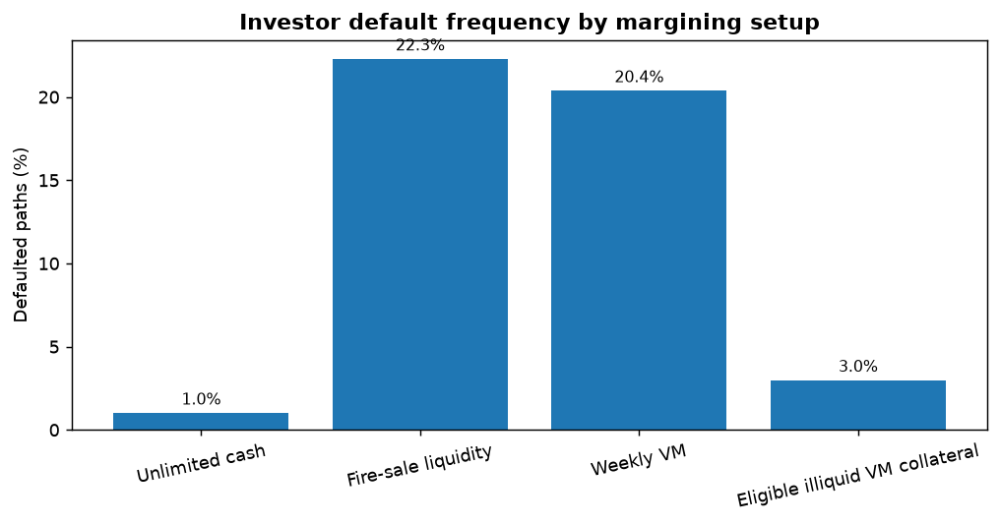
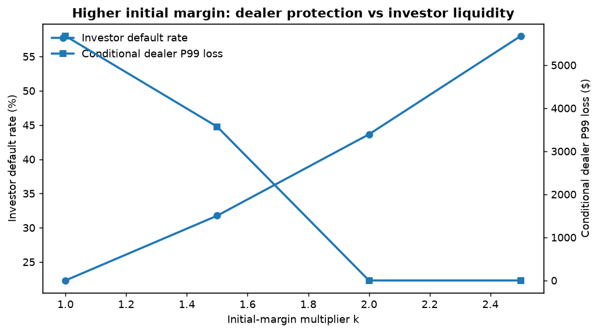
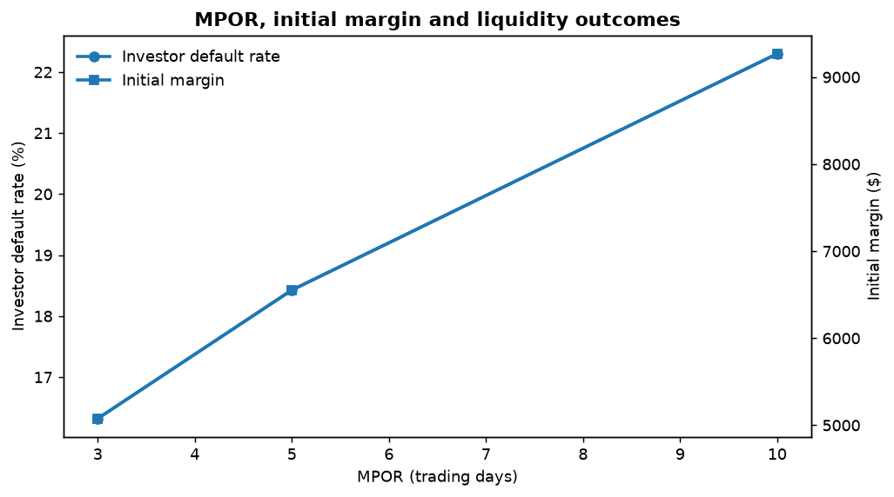
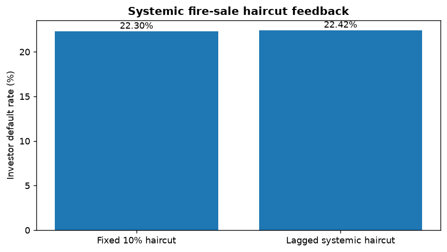

OTC Derivatives Margining & Systemic Liquidity Risk
A Monte Carlo study of bilateral initial margin, variation margin, liquidity constraints, fire sales, counterparty losses and systemic feedback.
Research question
Can margin requirements protect a dealer from counterparty exposure while increasing liquidity pressure on an investor, forcing discounted asset sales and endogenous default? The model studies how IM, VM frequency, MPOR, collateral eligibility and procyclical recalibration change that balance.
Selected scenario comparisons
| Scenario | Investor default | Fire-sale cost / path | Mean dealer loss / path |
|---|---|---|---|
| Unlimited cash, daily VM | 1.03% | $0 | $0.12 |
| Limited cash, daily VM | 21.92% | $552.26 | $10.91 |
| Weekly VM (5 days) | 20.39% | $516.29 | $51.12 |
| Eligible illiquid collateral | 3.00% | $0 | $0.61 |
Corrected implementation · 20,000 paths · 252-day observation window · 10-day MPOR. The dealer-loss distribution has a large mass at zero; unconditional and conditional loss metrics should be read together.
Model outputs




Explore the project
Notebooks
Four focused walkthroughs: IM and baseline, fire sales and dealer losses, policy experiments, and systemic risk.
Notebook guide →